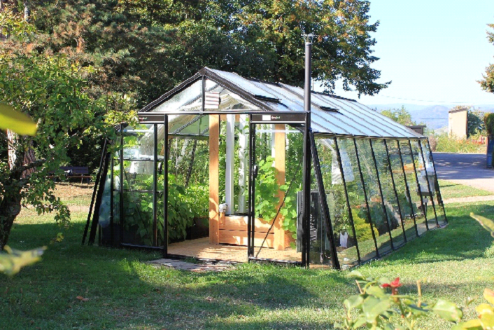
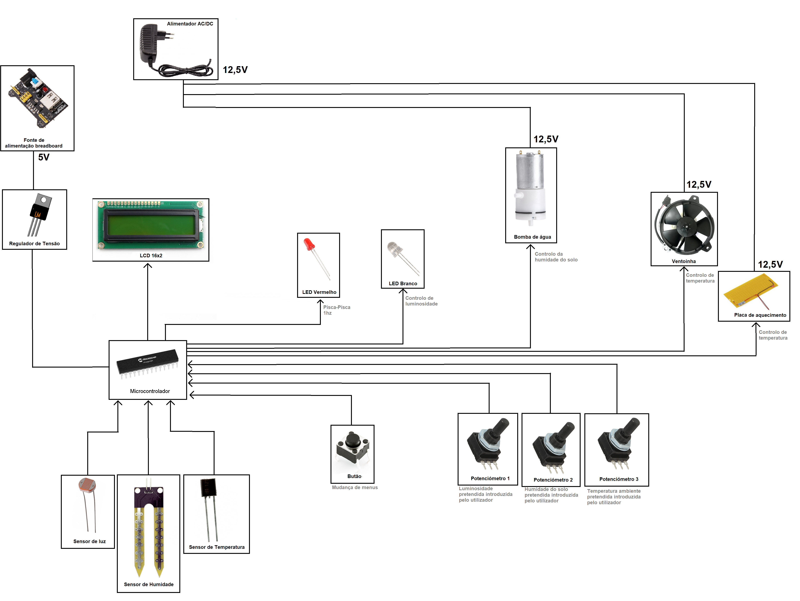
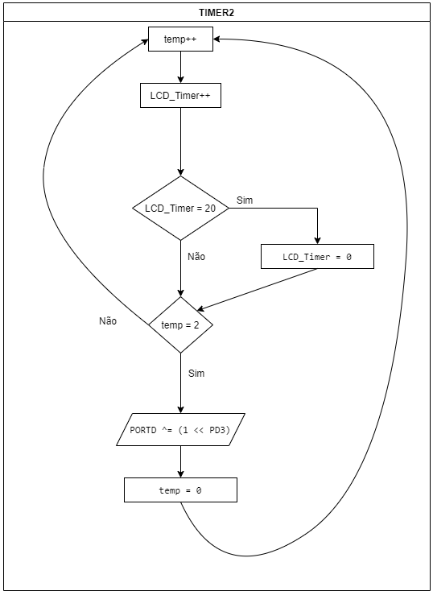
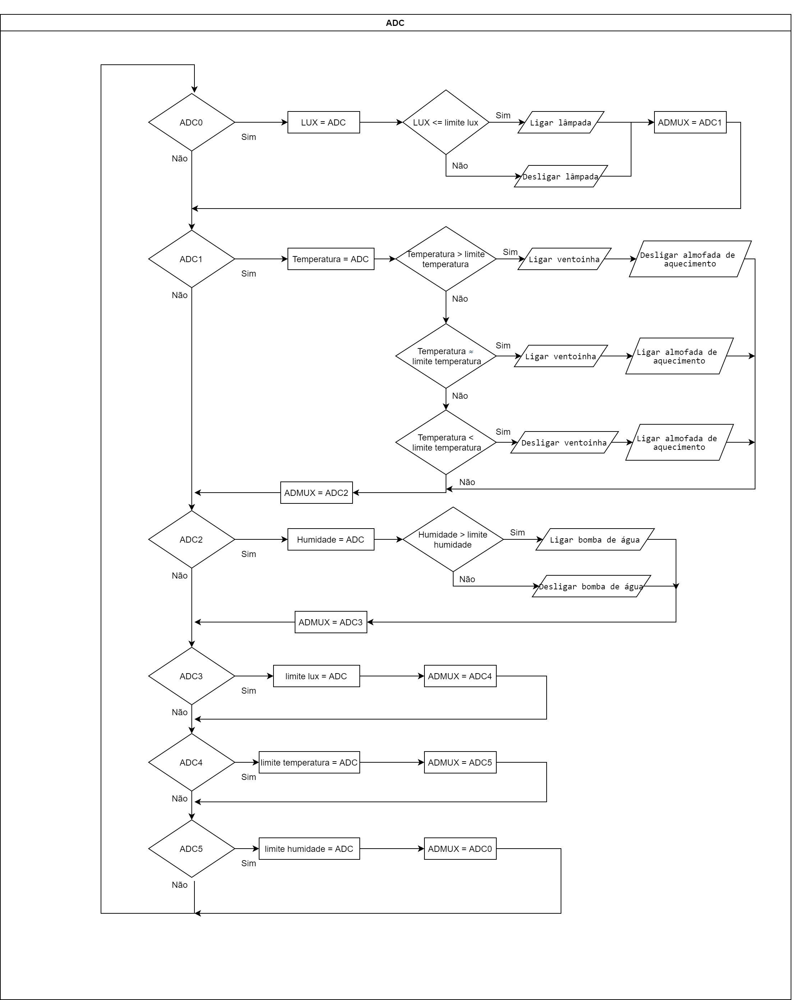
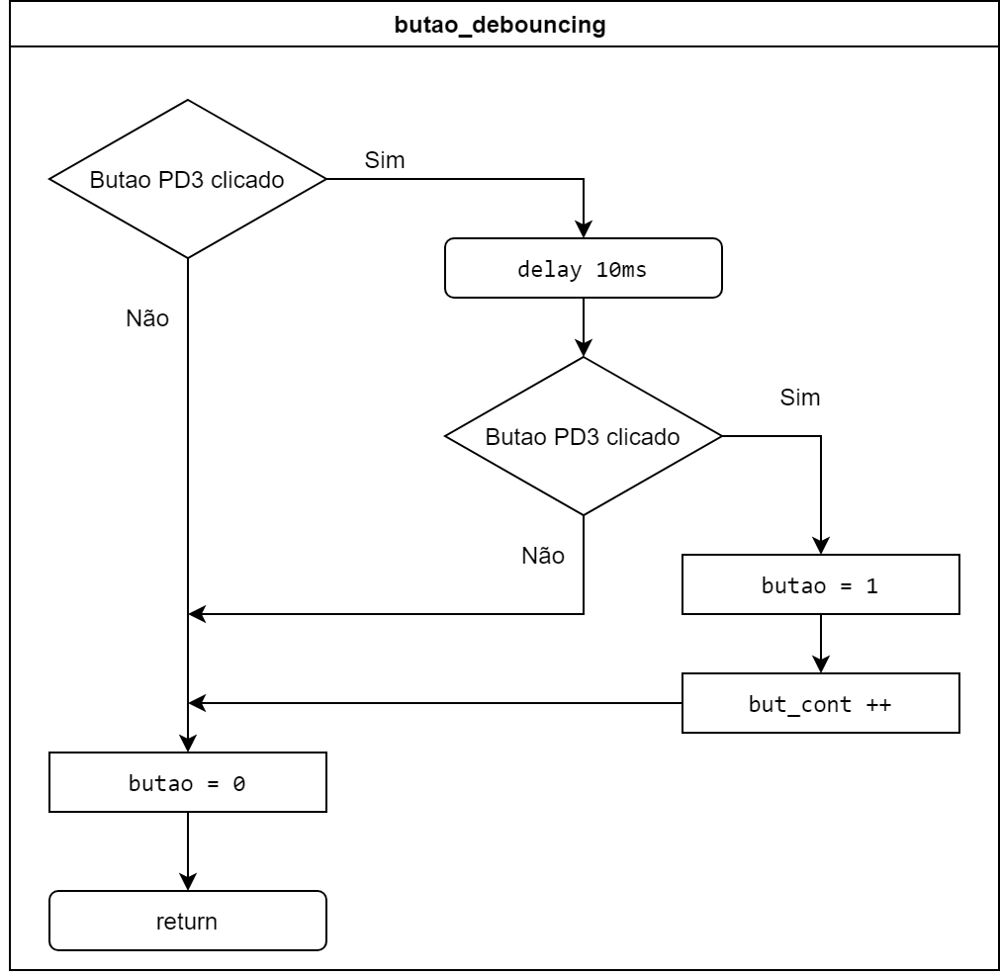
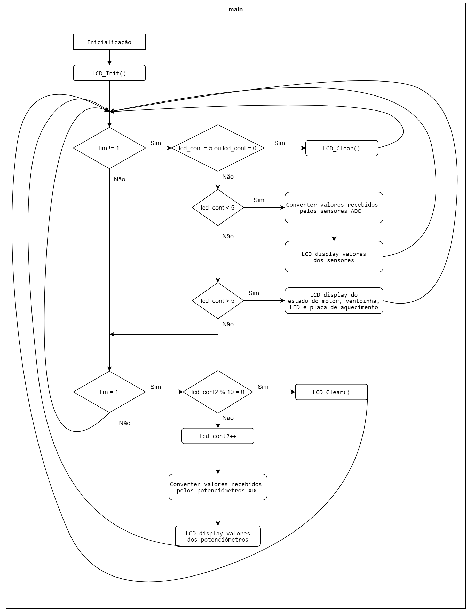

ESTUFA 4.0


|
Trabalho realizado no âmbito da unidade curricular de LABSI |
|
Rúben Silva (nº1171183) |
1171183@isep.ipp.pt |
|
João Dias (nº1181617) |
1181617@isep.ipp.pt |
INTRODUÇÃO
Proposta
No âmbito da unidade curricular de LABSI, foi-nos proposta a realização de um projeto a partir de um sistema com um microporcessador. Com os requisitos mínimos de converter um sinal analógico para um valor digital. um atuador PWM e a gerar uma onda quadrática com frequência de 1hz.
A escolha deste projeto partiu do interesse e ambição de ambos os membros do grupo em perceber os mecanismos básicos de uma estufa semiautónoma. Após nos debruçarmos sobre os maiores problemas que afetam o mundo nos dias que corremdeparamo-nos com o dilema do aumento exponencial da população mundial econsequente falta de recursos para sustento de tantos seres humanos. Estufas automatizadas têm vindo, então, a ser cada vez mais frequentes nos países mais desenvolvidos, uma vez que têm provado uma enorme eficiência em relação às estufas tradicionais e por isso mais facilmente atendem às necessidades de uma população mais exigente. Estes sistemas constituídos por equipamentos automatizados prometem melhorar o conforto e a segurança no trabalho e permitem uma melhor monitorização das operações e dos resultados
No nosso projeto são usados vários grupos de sensores que permitem a aquisição de dados vitais e importantes relativos à climatização, preservação e posteriormente colheita das culturas a desenvolver dos quais podemos destacar os de temperatura, humidade e luz e os seus correspondentes atuadores, ventoinha e heating pad para controlo de temperatura, sistema de irrigação para controlo de humidade e luz interna para controlo de luz, se bem que no mercado atual já se utilizam equipamentos mais elaborados como os de controlo de fertilização e automatização de colheitas que não iremos pôr em prática devido à sua difícil exequibilidade.
CoolFarm
Um bom exemplo da implementação deste tipo de sistemas é a inovadora CoolFarm da in/store, uma empresa portuguesa sediada em Coimbra, vencedora de vários prémios e somadora de vários credores, que apresentou e desenvolveu esta solução tecnológica demonstrando a nível prático por todo o mundo as suas aplicações, mas que, infelizmente, acabou por falir recentemente por má gestão e falta de experiência. Este sistema é intuitivo, inteligente, de funcionamento automático, e possui um ambiente limpo e climatizado, muito adequado para o cultivo de vegetais de alta qualidade e que exigem condições difíceis de desenvolvimento. Em comparação com a agricultura tradicional, este sistema reduz o consumo de água em 90% e elimina o uso de pesticidas e herbicidas. É composto por módulos que partem de cerca de 100 metros quadrados de área de produção, mas podem ser facilmente adicionados nas direções horizontal e especialmente vertical, permitindo um enorme aproveitamento de área. [1] [2] [3] [4]
Figura 1: CoolFarm in/store, Coimbra [1]
Figura 2: CoolFarm in/store APP, Startup 2016 [1]
Smart Greenhouse
Outro exemplo importante a salientar é a Smart Greenhouse da Solar Impulse Foundation, assim como a CoolFarm trata-se de um sistema que pode garantir a segurança alimentar, qualidade e crescimento dos vegetais. Sendo extremamente versáteis devido ao facto de podere ser colocada em locais de difíceis condições muito pouco favoráveis à agricultura. A Greenhouse possui sistemas inteligentes, incluindo sensores de clima e água que enviam dados diretamente para a nuvem por meio de conexões IOT e máquinas de IA remotas para processar os dados adquiridos, que são posteriormente enviados como notificações inteligentes aos usuários e/ou funcionários destas estufas, fornecendo conhecimento agronómico do sistema em tempo real. [5] [6]
Figura 3: SmartGreenhouse, Solar Impulse [2]
ARQUITETURA
Ao longo da realização do projeto, de modo a prover um trabalho mais estruturado e organizado, e agora para a sua melhor compreensão, ilustou-se a seguinte arquitetura:
{kind=link}
Figura 4: Arquitetura do projeto
HARDWARE
Lista de principais componentes utilizados:
- ATmega168P
- 4 x Potenciómetros (3 ativos usados pelo consumidor)
- Push button
- Bomba de água RS-360 DC 12V
- Ventoinha DC 12V
- Placa de aquecimento DC 12V
- LED Branco 5mm
- LED Vermelho 5mm
- Fonte Alimentaçao 100-230VAC P/12,5VDC 2A
- Fonte De Alimentação Para Breadboard 5V
- LDR NSL19M51
- Diodo retificador 1N4007
- Moist sensor FC-28
- 3 x transístores npn bc875
- Sensor de temperatura KTY81-110
- Regulador de tensão LM323
Microcontrolador
Um dos requisitos do projeto é a utilização de um microcontrolador AVR, por tanto escolheu-se o ATmega168P, geralmente usado em muitos projetos e sistemas autônomos que requerem microcontroladores simples, de baixo consumo de energia e baixo custo, este que, principalmente, também contém [7]:
- Uma frequência de ciclos de 20MHz
- 6 canais PWM
- 2 Timers 8-bit e 1 Timer 16-bit
- 6 pinos para converter A/D 10-bit
Figura 5: ATmega168P
Sensores e Entradas
Como já dito antes, considerou-se 3 variáveis externas importantes, a humidade do solo e a temperatura e luminosidade do meio, de modo a receber e processar estes valores externos, usou-se então 3 sensores correspondentes (Moist sensor FC-28 sensor de humidade, KTY81-110 de temperatura e NSL19M51 de luminosidade):
Figura 6: Moist sensor FC-28 - Sensor de humidade
Figura 7: KTY81-110 - Sensor de temperatura
Figura 8: LDR NSL19M51 - Sensor de luz
Para além disso consideramos importante a interação com um utilizador de forma a poder personalizar o funcionamento da estufa, sendo possível através de 3 potenciometros controlar e definir os limites de temperatura, humidade e luminosidade, usando-se um butão para trocar entre modos de funcionamento do LCD e microcontrolador (sendo eles apresentaçao dos valores lidos pelos sensores e valores lidos e definidos pelos potenciómetros)
Motores e Saídas
De forma a controlar a ventoinha e a placa de aquecimento, como necessitam de uma tensão superior à fornecida pelo microcontrolador, são alimentadas a uma fonte de tensão de 12,5V e, por isso, foi usado o transistor npn bc875 como interruptor, que entra em condução quando recebe tensão suficiente da base e entra em corte quando a tensão da base é nula, ou seja podemos controlar o seu estado de funcionamento a partir de um pino de saída do microcontrolador e consequentemente comandar o funcionamento da ventoinha e da placa. Para a bomba de água, que funciona equivalente a um motor DC de 12V usou-se o mesmo método, mas para fornecer um caminho seguro para o retrocesso indutivo do motor e impedir picos de tensão, colocou-se tb um diodo retificador, protegendo assim o transistor. Para o controlo de luminosidade usou-se um LED branco de 5V alimentado pelo circuito do microcontrolador.
Figura 9: Ventoinha 12V
Figura 10: Placa de aquecimento
Figura 11: Bomba de água
Alimentação
Para fornecer energia suficiente aos motores e às outras saídas, usou-se um alimentador AC/DC com uma tensão de saída de 15V e corrente 2A, é de notar que também é adequado usar qualquer outra fonte como uma fonte de alimentação de bancada, uma bateria ou pilhas desde que se obtenha uma tensão equivalente à necessária.
De forma a alimentar o microcontrolador e os seus periféricos, usou-se uma fonte de alimentação para breadboard de 5V e um regulador de tensão de 5V para que não haja nenhuma nenhuma resultância na tensão recebida pelo microcontrolador esta que conecta ao AVCC do mesmo de modo a alimentar internamente os pinos do PORTC ou A/D.
Ligações do microcontrolador
Ligou-se o GND do microcontrolar ao GND do regulador de tensão, o VCC e o AVCC aos output do regulador de tensão e os PORTs da seguinte forma:
| PORTB | PORTC | PORTD | |||
|---|---|---|---|---|---|
| PB0 | RS - Register select do LCD | PC0 | ADC0 - Entrada A/D do sensor de luz | PD0 | Base do transístor ventoinha - Controlo de temperatura |
| PB1 | RW - Read / Write do LCD | PC1 | ADC1 - Entrada A/D do sensor de temperatura | PD1 | Led branco - Controlo de luz |
| PB2 | --- | PC2 | ADC2 - Entrada A/D do sensor de humidade do solo | PD2 | Base do transístor placa de aquecimento - Controlo de temperatura |
| PB3 | Led vermelho - Sinal PWM 1hz | PC3 | ADC3 - Entrada A/D do potenciómetro edita limite de luz | PD3 | Push button - Altera menus do LCD |
| PB4 | DB4 - Data pin 4 do LCD | PC4 | ADC4 - Entrada A/D do potenciómetro edita limite de temperatura | PD4 | Base do transístor bomba de água - Controlo de humidade |
| PB5 | DB5 - Data pin 5 do LCD | PC5 | ADC5 - Entrada A/D do potenciómetro edita limite de humidade | PD5 | --- |
| PB6 | DB6 - Data pin 6 do LCD | PC6 | --- | PD6 | --- |
| PB7 | DB7 - Data pin 7 do LCD | --- | --- | PD7 | --- |
Placas PCB e esquemas
É de notar que foram feitos 2 esquemas PCB, um deles correspondente ao microcontrolador, sensores (uma vez que operam fora do circuito são conectados atraves de pinos header fêmea), inputs, LEDS e LCD alimentados com 5V e com 3 pinos header de modo a ligar ao outro PCB:
Figura 12: PCB 5V renderizado em 3D
Figura 13: PCB 5V
Figura 14: Esquema do circuito 5V
O segundo PCB embarca os motores e saídas (conectados, também atraves de pinos header fêmea), é alimentado com 12,5V e contém também 3 pinos header de modo a conectar-se ao PCB onde opera o microcontrolador:
Figura 15: PCB 12,5V renderizado em 3D
Figura 16: PCB 12,5V
Figura 17: Esquema do circuito 12,5V
SOFTWARE
Em seguida apresentamos os fluxogramas relativos às principais funções incorporadas no código exucutado pelo microcontrolador.
Figura 18: Fluxograma do TIMER2
Figura 19: Fluxograma do ADC
Figura 20: Fluxograma do debouncing do butão
Figura 21: Fluxograma da main
Resultados
Após finalização e avaliação do projeto final em funcionamento podemos concluir que todo o projeto se encontra a funcionar conforme as metas estabelecidas pelo grupo de trabalho, sendo que este é capaz de reconhecer as variações de temperatura, luz e humidade que são as principais variáveis a avaliar na administração de um estufa e reagir com a ativação/desativação do respetivo atuador. De notar que o projeto foi levado mais além da espectativa inicial ao inserir um menu que define os pontos para os quais os atuadores devem ser acionados ou desligados, deixando o projeto mais customizavél para o consumidor final e permitindo também a sua aplicação para diferentes produtos agrícolas consoante as suas características. Com a implementação dos atuadores surgiu a necessidade de recorrer a uma segunda fonte de alimentação devido aos elevados níveis de tensão a que o limitador estava sujeito,sendo que a de maior potência foi aplicada aos coletores dos três tansistores utilizados e a de menor potência para uso exclusivo do microcontrolador.
Conclusões
A construçao de um projeto, provou-se mais desafiante do que o esperado, surgiram muitos imprevistos e situações fatigantes devido a pequenos problemas que originavam problemas maiores, o que acabou por nos permitir assimilar muitos conceitos de eletrónica analógica e digital contribuindo imenso para o nosso trajeto de aprendizagem.
Todas as dificuldades e problemas acabaram por ser utlrapssadas com ideias e soluções adequadas que no final permitiram concluir o projeto com sucesso.
Quanto aos pontos a melhorar podemos destacar dois: a lâmpada de DC de 12V ao invés do LED e o uso de uma única bateria verde(energia solar)capaz de alimentar todo o circuito. A primeira não foi implementada devido ao facto de não estar disponível no DEE e o grupo não ter encontrado possibilidade de obter uma, contudo a sua implementação seria similar aos outros atuadores através da utilização de um transistor como interruptor. Quanto à bateria o grupo concluiu que não haveria tempo suficiente nem recursos para adquirir todo o conhecimento necessário para aplicar esta forma de alimentação em tempo útil.
Referências
[1] Campeão das Províncias, “Semanário no Papel - Diário Online,” Coimbra, 2017.
[2] Trendy, Realizador, CoolFarm in/store: a nova forma de cultivo que está a germinar em Portugal. [Filme]. Trendy, 2017.
[3] A. R. Costa, “Distribuição Hoje,” Distribuição Hoje, 26 5 2017. [Online]. Available: https://www.distribuicaohoje.com/producao/criaram-estufa-inteligente-retalho-agora-saostartup-do-ano/. [Acedido a 10 nov 2020].
[4] Grande Consumo, CoolFarm in/store pretende revolucionar a agricultura tradicional, [Acedido a 9 nov 2017].
[5] Solar Impulse Foundation, “Solar Impulse Foundation,” Solar Impulse Foundation, 8 2019. [Online]. Available: https://solarimpulse.com/efficient-solutions/smart-greenhouse. [Acedido a 10 nov 2020].
[6] Solar Impulse Foundation, “Solar Impulse Foundation,” Solar Impulse Foundation, 8 2019. [Online]. Available: https://solarimpulse.com/foundation. [Acedido a 10 nov 2020].
[7] ATmega48/88/168 - Complete Datasheet [Online]. Available: https://ww1.microchip.com/downloads/en/DeviceDoc/ATmega48_88_168_megaAVR-Data-Sheet-40002074.pdf. [Acedido em 10 11 2020].